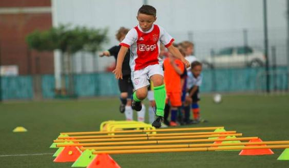
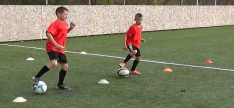

Sobre Nosotros
Sobre Nosotros
Somos apasionados por el fútbol y estamos comprometidos a ayudar a los jugadores de todas las edades y niveles a alcanzar su máximo potencial. Con años de experiencia en el campo y un equipo de entrenadores altamente calificados, ofrecemos un entorno de entrenamiento profesional y motivador
Nuestros Servicios
Entrenamiento Personalizado
Ofrecemos sesiones de entrenamiento personalizadas que se adaptan a las necesidades individuales de cada jugador. Ya sea que estés comenzando en el mundo del fútbol o busques perfeccionar habilidades específicas, nuestro equipo diseñará un programa de entrenamiento que te ayudará a alcanzar tus objetivos.
Campamentos de Verano
Nuestros campamentos de verano son perfectos para jugadores jóvenes que desean mejorar sus habilidades mientras disfrutan de un entorno divertido y competitivo. Los campamentos incluyen ejercicios técnicos, tácticos y físicos, así como partidos y actividades recreativas.
Clases Grupales
Las clases grupales son una excelente manera de mejorar el trabajo en equipo y la comunicación en el campo. Nuestros entrenadores se enfocan en el desarrollo de habilidades técnicas y tácticas, promoviendo un juego colectivo eficiente y cohesivo.
Evaluaciones de Rendimiento
Realizamos evaluaciones de rendimiento para identificar las fortalezas y áreas de mejora de cada jugador. Utilizamos tecnología avanzada y análisis detallados para proporcionar retroalimentación precisa y consejos prácticos para el desarrollo continuo.
Programas de Acondicionamiento Físico
El acondicionamiento físico es fundamental para el éxito en el fútbol. Ofrecemos programas especializados que se centran en la resistencia, la velocidad, la agilidad y la fuerza, ayudando a los jugadores a mantenerse en su mejor forma durante toda la temporada.
Entrenamiento para Porteros
Los porteros requieren habilidades y entrenamiento específicos. Ofrecemos sesiones de entrenamiento dedicadas a mejorar las técnicas de parada, el posicionamiento, los reflejos y la toma de decisiones bajo presión.
Nuestros Servicios
Ofrecemos una amplio desarrolo para el entrenamiento de jovenes ademas de fomentar su desqarrolo ayudando al caracter y dciplina con nuestros valores.